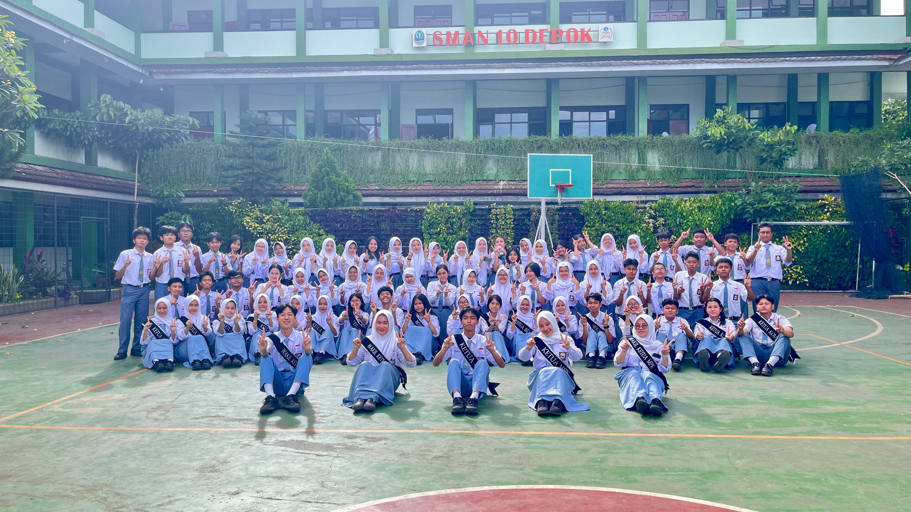
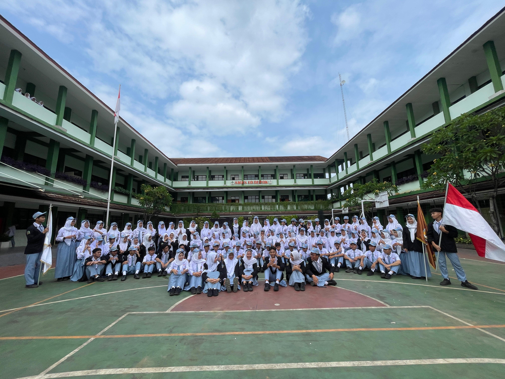
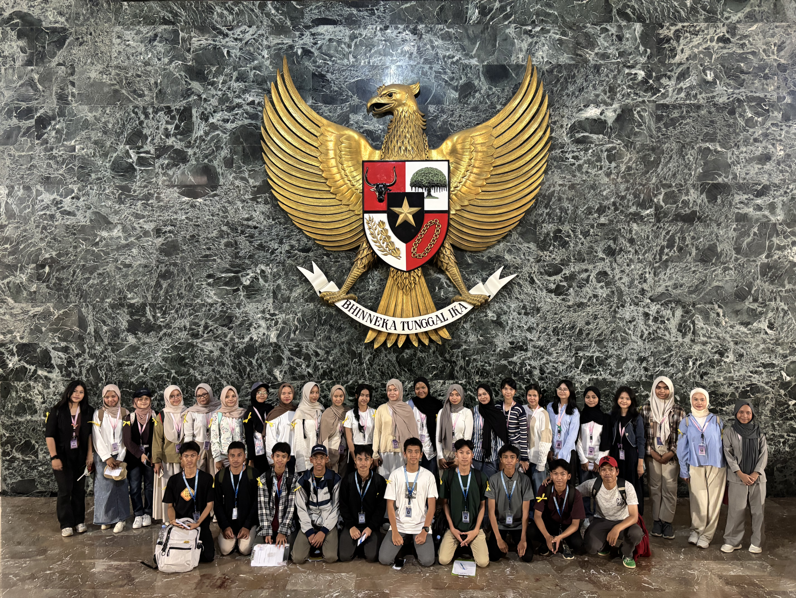
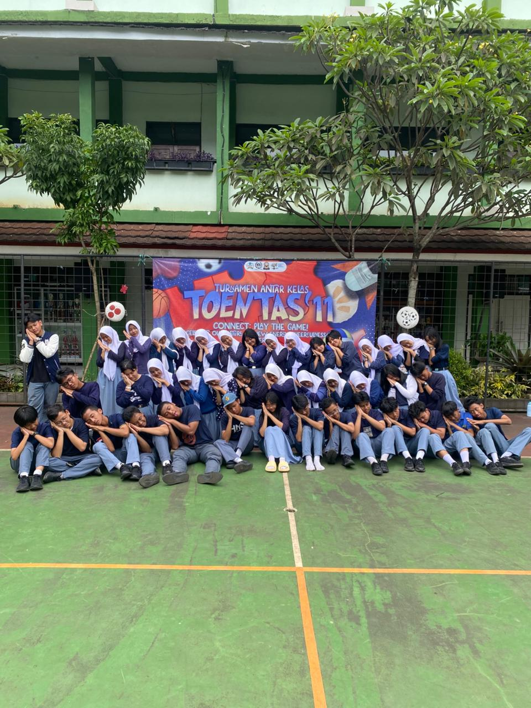
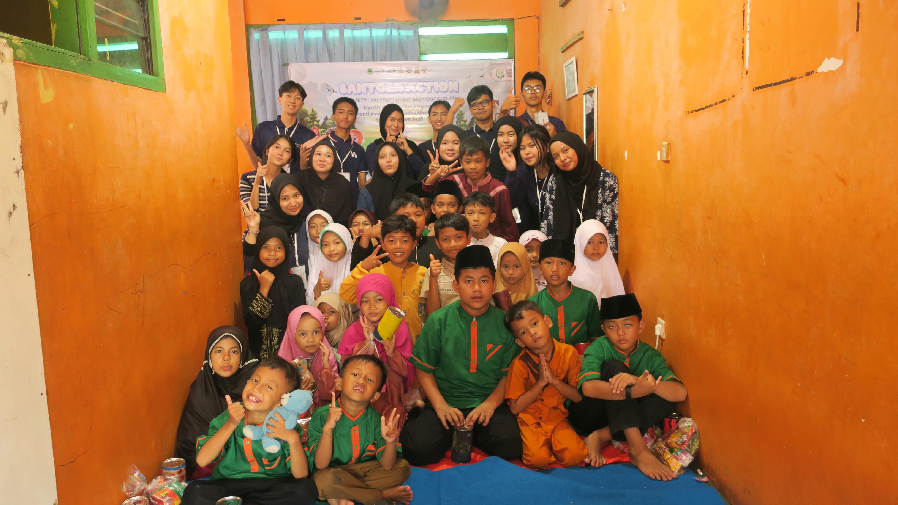
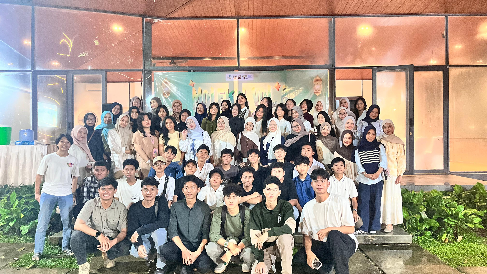

Data sesuai pendaftaran
Masukkan nama lengkap sesuai data pendaftaran.
Masukkan data sesuai pendaftaran untuk melihat hasil seleksi.
Cek Hasil Seleksi ↓Isi ketiga data berikut dengan benar.
Halaman resmi penyampaian hasil Open Recruitment MPK dan OSIS SMA Negeri 10 Depok Tahun 2026.
Terima kasih kepada seluruh peserta yang telah mengikuti rangkaian proses seleksi.
Masukkan nama lengkap sesuai data pendaftaran.
Pilih tahun lahir sesuai data pendaftaran.
Pilih MPK atau OSIS sesuai pilihan pendaftaran.
Pastikan data benar sebelum mengecek hasil.
Masukkan nama lengkap, tahun lahir, dan pilihan MPK/OSIS lalu tekan tombol cek.
Pastikan penulisan nama, tahun lahir, dan pilihan sama dengan data pendaftaran.
Biru berarti lolos.
Kuning berarti lolos bersyarat.
Merah berarti belum lolos.





